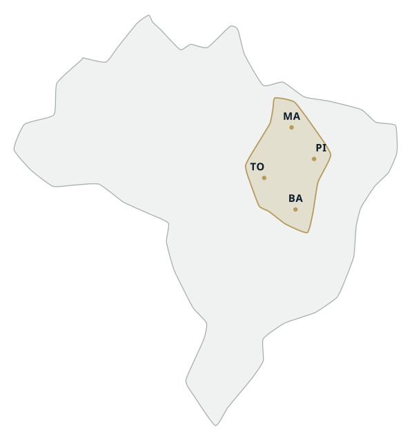

01
Comprar
Áreas apresentadas com aptidão, escala, logística e recurso hídrico à mostra — o que basta para você decidir se vale a visita.
Imobiliária rural · MATOPIBA
Compra, venda e arrendamento de propriedades rurais no MATOPIBA e nas fronteiras agrícolas vizinhas, com experiência imobiliária, conhecimento regional e atendimento a investidores do Brasil e do exterior.
01 Carteira
Cada fazenda da carteira leva o nome de uma pedra — são ativos únicos, apresentados com clareza para objetivos produtivos, patrimoniais e de investimento.
No conhecimento do mercado e na condução responsável de cada negociação — do primeiro contato à assinatura.

Representação esquemática, sem finalidade cartográfica.
02 Região
Com atuação no Maranhão, Tocantins, Piauí e Bahia — e nas fronteiras agrícolas vizinhas — a Prime Fazendas aproxima o conhecimento local dos interesses de produtores, empresas e investidores nacionais e internacionais.
03 Como atuamos
01
Áreas apresentadas com aptidão, escala, logística e recurso hídrico à mostra — o que basta para você decidir se vale a visita.
02
Sua propriedade chega ao comprador certo sem circular de mão em mão. Você decide o que é publicado e quando.
03
Áreas disponíveis conectadas a produtores e empresas em expansão, com prazo e condições acertados entre as partes.
04 Verticais
Cada área é apresentada pela vocação que já tem — lavoura consolidada, pastagem formada, integração, projeto florestal ou patrimônio. Sem forçar o imóvel a um rótulo que não é o dele.
05 Radar Agro
Seção em preparação. Os textos abaixo são modelos de pauta. Publicamos apenas conteúdo revisado, com fonte e data verificadas.
Últimas do mercado
Agenda Agro
06 Quem somos
A Prime Fazendas atua há mais de três anos na conexão de oportunidades de compra, venda e arrendamento de propriedades rurais. À frente da empresa, seu fundador reúne 18 anos de experiência no mercado imobiliário, conduzindo relacionamentos e negociações com proximidade, discrição e responsabilidade.
Experiência
Mais de três anos de Prime Fazendas e 18 anos de mercado imobiliário à frente da empresa.
Conhecimento regional
Atuação concentrada no MATOPIBA e nas suas características produtivas e logísticas.
Conexão
Aproximação entre proprietários, produtores, empresas e investidores do Brasil e do exterior.
Curadoria
Oportunidades apresentadas com informações objetivas e atendimento especializado.
Discrição
A região é pública; endereço, matrícula e visita são tratados no atendimento — quem vende mantém o controle da negociação.
Contato
Seja para comprar, vender ou arrendar, converse com quem conhece o mercado, a região e o peso de cada informação que circula.